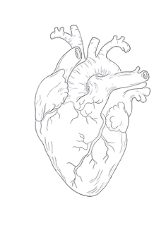

29 SEPTEMBRIE • ZIUA MONDIALA A INIMII
Sanatatea inimii Intre perceptii si mituri
Cat de multe dintre lucrurile pe care le credeam despre inima sunt cu adevarat reale?

29 SEPTEMBRIE • ZIUA MONDIALA A INIMII
Cat de multe dintre lucrurile pe care le credeam despre inima sunt cu adevarat reale?

01 • INIMA
Inima este un organ muscular care pompeaza sangele in intregul organism, aigurand transportul oxigenului si al substantelor nutritive catre celule.
Inima impinge sangele prin intregul organism.
Doua atrii si doua ventricule lucreaza impreuna.
Inima bate zi si noapte, fara pauze volundare.
Miocardul este tesutul muscular care produce contractiile inimii.
Apasa pentru a descoperi un fapt interesant despre inima.
02 • MITURI
Unele lucruri despre inima par evidente, dat cat de multe sunt cu adevarat reale?
Cand suferim din dragoste, inima chiar se poate rupe.
Inima se afla in partea stanga a pieptului.
Inima se opreste cand stranuti.
Oamenii folosesc numai o parte a inimii.
Sangele din vene este albastru.
03 · SANATATEA INIMII
Obiceiurile de zi cu zi pot influenta sanatatea inimii. Unele schimbari mici pot conta mai mult decat crezi.
Activitatea fizica ajuta inima si circulatia sangelui.
O alimentatie echilibrata contribuie la sanatatea cardiovasculara.
Odihna este importanta pentru buna functionare a organismului.
Gestionarea stresului poate sustine sanatatea inimii.
04 · HEART CHECK
Raspunde sincer la cateva intrebari si descopera cat de sanatoase sunt obiceiurile tale de zi cu zi.
05 · 29 SEPTEMBRIE
Ziua Mondiala a Inimii este marcata in fiecare an pe 29 septembrie si atrage atentia asupra importantei sanatatii cardiovasculare.
Sanatatea inimii tine nu doar de ceea ce faci astazi, ci si de obiceiurile pe care le construiesti in timp.
06 · SURSE
Informatiile prezentate pe aceasta pagina se bazeaza pe surse medicale si organizatii internationale.
World Health Organization - cardiovascular diseases
World Heart Federation - World Heart Day
American Heart Association - heart health